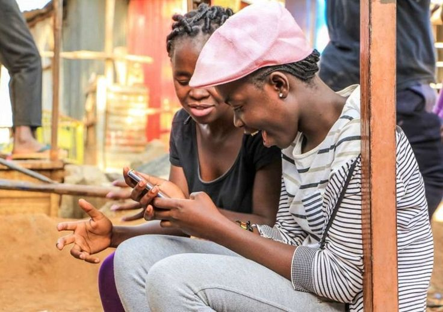

A community-based initiative supporting marginalized youth through integrated mental health, hygiene, and sexual health education. The program combines interactive workshops, literacy tutoring, sports activities, and cultural wellness sessions to foster engagement, skill-building, and healthy behaviors. By combining educational and recreational approaches, the initiative promotes holistic development and strengthens youth participation in community programs.

Sarva is a digital-first mental health initiative that makes support part of everyday life. By placing QR codes in schools, cafés, workplaces, and public spaces, we transform ordinary environments into entry points for care. Each scan connects people to AI-personalized therapy tools, peer support circles, and creative expression spaces—breaking stigma and making mental health help accessible, engaging, and free. Beyond individuals, Sarva collects anonymous insights to map stress patterns, helping communities and policymakers act earlier and smarter.

A humanitarian initiative providing primary healthcare and mental health support to displaced populations in transit and settlement areas. The program integrates preventive care, vaccinations, and psychosocial counseling, while coordinating with local clinics, NGOs, and volunteers to ensure continuity of care. Structured follow-up visits and community engagement strategies help reduce barriers to healthcare and improve overall health outcomes for refugees.
A collaborative initiative designed to strengthen rural health service delivery by engaging multiple stakeholders, including local health authorities, community leaders, and NGO representatives. The program conducts workshops and consultative meetings to identify gaps, prioritize resource allocation, and develop actionable strategies for improving healthcare access and quality. Field data and community feedback inform policy recommendations and planning, supporting evidence-based decision-making and sustainable service improvements.

A community-focused initiative designed to enhance preparedness for natural disasters and health emergencies. The program provides structured training on hygiene practices, first aid, and emergency response strategies, complemented by practical drills and awareness campaigns in high-risk areas. Local leaders and volunteers are actively engaged to promote knowledge transfer and sustain community readiness, reaching a wide network of households and strengthening local resilience systems.

A community-focused initiative led within an NGO to provide academic support to marginalized children from low-income families. The program integrates interactive lessons, virtual study groups, and homework support to strengthen literacy, numeracy, and overall academic confidence. Collaboration with local educators and volunteers ensures tailored guidance and sustained engagement, helping children bridge educational gaps and improve learning outcomes in underserved communities.

A practical resource designed to help local NGOs plan and implement health programs efficiently with limited resources. The toolkit provides step-by-step planning templates, monitoring and evaluation frameworks, and guidelines for effective community engagement. Piloted and shared with several NGOs, it supports optimized program delivery, improved resource utilization, and enhanced impact in underserved communities.